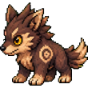

Tap a stage to read its story.
A tan-and-brown wolf pup with a round spiral marking on its chest and bright amber eyes, Spirpup has the alert, chest-forward posture of a creature that has decided it is in charge of something but hasn't worked out what yet. Its fur is soft but already shows the layered mane that will grow larger with age. It was born in the ghost hollow at a crossing where dark and light balance - the guardians say it is proof that shadow and courage come from the same place.
Field note: Spirpup sits with its back to every wall it finds - it refuses to ever have something approach from behind.
Ghost Hollow. Spirpup and its family are found in the Ghost Hollow. See everyone who lives there.
Share a Bond Food that matches its types to become friends. Spirpup loves:
A Bond Food is not a trick. It joins your spirit with the Kimuro's spirit, and only when it chooses you.
Print the Kimuro adventure packs: mazes, cards, a board game and Bond Mark medals.
See the printable packs